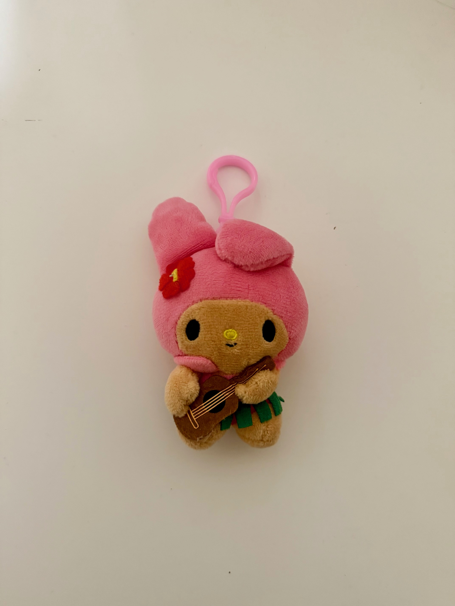

My Melody
My Melody is a part of the Sanrio Characters. She adores her family and friends. She is very honest and wholesome. She loves to bake almond poud cake, her favorite food. She is a hawaii edition plushie with her fit.